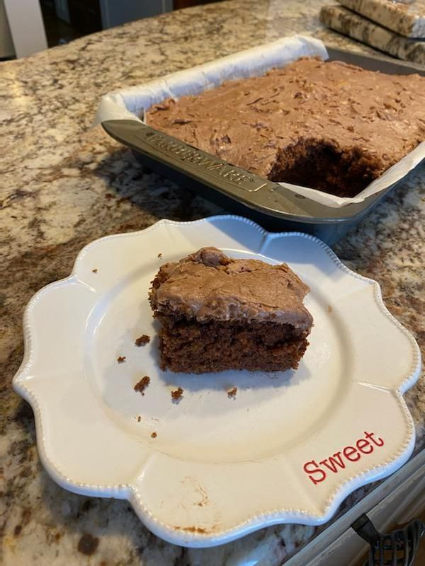

Sheath Chocolate Cake

Cake
Ingredients
- 2 cups flour
- 2 cups sugar
- 1/2 cup butter
- 1/2 cup Crisco
- 1 cup water
- 1 cup buttermilk
- 4 tablespoons cocoa
- 1 teaspoon baking soda
- 1 teaspoon vanilla
- 1 teaspoon cinnamon
- 2 eggs
Steps
- Add flour, sugar, butter, crisco, and cocoa to a bowl
- Boil 1 cup of water and pour it into the bowl
- Turn oven to Bake and 400°F
- Add buttermilk, baking soda, vanilla, cinnamon, and eggs to the bowl mix together
- Pour mixture into a greased 9x13 pan
- Place pan in the oven for 20-25 minutes
Frosting
Ingredients
- 1/2 cup butter or margarine
- 4 teaspoons cocoa
- 6 tablespoons water
- box of powdered sugar
Steps
- Begin 5 minutes before cake is finished
- Add butter, cocoa,and water into a pot
- Bring mixture to a boil then remove from heat
- Mix in powdered sugar